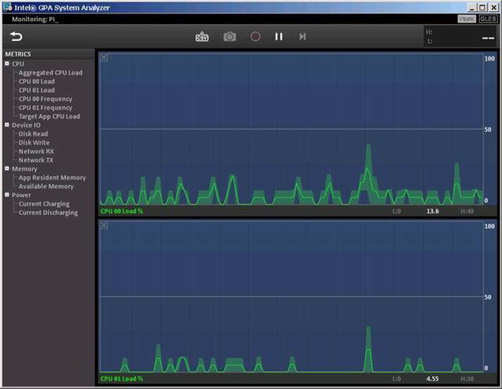
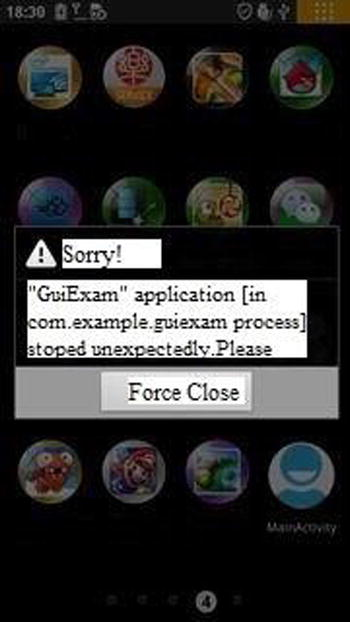

Performance optimization is one of the most important goals every application developer wants to pursue, regardless of whether the application is for a general desktop Windows computer or an Android device. Android is a resource-limited system, and it therefore requires very strict resource utilization. Compared with a desktop system, performance optimization for Android applications is far more critical.
Different applications have different areas of focus regarding optimization. Performance optimization for Android systems generally falls into three categories: application running speed, code size, and power consumption. Generally speaking, storage space and cost for Android on Intel Atom processors is not a bottleneck, so this chapter focuses on performance optimization that makes applications run faster. Chapter 13 covers power-consumption optimization.
The chapter first introduces the basic principles of system on chip (SoC) performance optimization, followed by principles and methodology of performance optimization for Android-based development on Intel architecture. Chapter 12 discusses application development for Android on Intel architecture using the native development kit (NDK).
Principles of Performance Optimization
Optimizing an application’s performance really means optimizing the application’s execution speed. The optimization aims at reducing the time needed to complete a specific task. This is achieved by making structural adjustments to the application based on either hardware or software.
When you’re optimizing an application’s performance, you need to follow several basic principles:
- Equal value principle: There is no change in the result of the application’s execution after performance optimization.
- : After performance optimization, the targeted code runs faster.
- : Sometimes performance optimization achieves a performance improvement in some areas but degrades performance in others. You must consider combined overall performance in determining whether performance optimization is needed.
One of the most important considerations involves trading time and space. For example, to perform a function calculation, the values of the function can be precalculated and put into a program storage zone (memory) as a table. When a program is running, instead of spending time repeatedly calculating the function, the program can get the value directly from the table and reduce the execution time. Similarly, a search can be done on a large space using the hash method and thereby eliminate the need for a comparison operation.
Performance optimization is based on various techniques. The following sections describe several major ones.
Reducing Instructions and Execution Frequency
The technique that’s chosen most frequently to optimize performance involves reducing instructions and execution frequency. For example, from the point of view of data structures and algorithms, the instructions for comparison and exchange in bubbling sequencing need to execute O(n
2) times. However, by using fast sequencing, you can reduce the instruction to O(n log n) executions.
In loop optimization, code motion can extract irrelevant public code from the loop and reduce the execution time of public code from N to 1, thus dramatically reducing the execution frequency. In addition, you can use inline functions supported by C and C++ to avoid embedding function-call code; you can omit the function-call instructions and the implementation of the return instructions.
Selecting Faster Instructions
You can perform the same function with different instructions. The different instructions take different machine clock cycles, and thus the execution times vary. This gives you the opportunity to choose a faster instruction.
Reducing computational strength is a typical example of performance optimization achieved by selecting a faster instruction set. For example, you can multiply an integer by 4 by shifting the operator two digits to the left. The shift instruction takes many fewer clock cycles and runs much faster than the multiplication or division instruction.
Another example is using special instructions provided by the hardware to replace generic instructions. For example, the Intel Atom processors support the Streaming SIMD Extensions (SSE) instruction set. For vector operations, you should always use SSE instructions: they run much faster thanks to instruction-level parallel processing. The ordinary addition instruction width for Intel Atom is 32 bits, whereas SSE instructions are capable of four times 32-bit data processing. As a result, optimized code using SSE instructions dramatically shortens the time consumed.
Improving the Degree of Parallelism
You can improve the degree of parallelism at multiple levels, including instruction, expression, function, and thread. Many modern embedded processors, including the Intel Atom processor, support instruction-pipeline execution. This lets you use an optimization method called instruction-level parallelism. A code chain can be decomposed into several units of code that are not dependent on the chain and can be executed in parallel in the pipeline.
In addition, many embedded system processors, such as the Intel Atom processor, physically support the concurrent execution of threads. Using an appropriate number of concurrent threads rather than a single thread can increase running speed. In order to take advantage of thread-concurrency optimization, you need to consciously adopt multithreading technology; sometimes optimization must be done with compiler support.
Using the Register Cache Effectively
Writing and reading the cache register is much faster than doing the same with memory. The goal of cache optimization is to put data and instructions that are being used and will be used in the cache, to reduce the cache hit rate and reduce cache conflicts. Cache optimization often appears in the optimization process for a nested loop. Register optimization involves the effective use of the register and keeping frequently used data in the register as much as possible.
Cache is based on locality. That is, cache assumes the data to be used is located in the most recent data that is already in use or is in the vicinity of its own register. This is called the locality principle or principle of locality, which deeply affects hardware, software, and system design and performance. Instructions and data required by the processor are always first read by cache access. If high-speed cache has the needed data, the processor always accesses high-speed cache directly. In this situation, such an access is called a ; if high-speed cache does not contain the needed data, this is referred to as a failed hit or cache miss.
If this happens, the processor needs to copy data from memory to high-speed cache. If the corresponding location of high-speed cache is occupied by other data, data that is no longer needed in cache is expelled and written back to memory. Failed hits result in a sharp rise in access time; therefore the goal in increasing cache efficiency is to improve the hit rate and lower failure rates. Data exchange between cache and memory is done with a block unit, which is used to block-copy or write back blocks containing needed data as well as write blocks back to memory.
Locality has two meanings:
- : Due to temporal locality, the same data object may be reused many times. Once a data object is copied to the cache after a failed hit, there are many follow-up hits on the object. The follow-up hits run faster than the original failed hit.
- : A block usually contains multiple data objects. Due to spatial locality, the cost of a block copy after a failed hit is shared by subsequent references to other objects.
Performance Optimization Methodology
Many methods and techniques area available for performance optimization. You can use one approach or multiple comprehensive optimization principles simultaneously, such as modifying the source code to run faster. Based on the type of criteria, optimization methods can be divided into different categories.
Depending on whether the optimization is associated with hardware, it is either machine-dependent optimization and machine-independent optimization. In machine-dependent optimization, application and code execution have nothing to do with the machine’s characteristics. These techniques are applicable to all machines. For example, moving code out of the loop, eliminating induction variables, and using strength-reduction technology can be applied to any machine or architecture (either x86 or ARM) to obtain the same optimal results.
Machine-dependent optimization can be done only on specific hardware or architecture. For example, switching ordinary vector instruction computing to use SSE instructions depends on many low-level details of the Intel Atom processor and can only be used on Intel processors that support SSE instructions. In general, machine-independent optimization is more complex and difficult to achieve than the machine-dependent optimization.
Performance Optimization Approaches
In an ideal scenario, the compiler should be able to compile any code you write and optimize it into the most efficient machine code. But the reality is that the compiler can automate only some of all possible optimizations, and the optimizations may be blocked by the optimization blocker. Depending on how much of a role human or automated tools play, performance optimization may be performed automatically by the compiler, done manually by the programmer manually, or performed with the assistance of development tools. The following sections present several approaches you can use to achieve performance optimization.
Automatic Optimization by the Compiler
Modern compilers can automatically complete the most common code optimizations, and this is the preferred way to optimize. This is also known as compiler optimization or compiling optimization. It must be triggered by appropriate extensions or switch variables.
C/C++ code optimization for Android applications can be achieved using the GCC compiler (one of the tools in the GNU toolchain) located in the NDK (the Android local development toolkit) or Intel Compiler (ICC). The next chapter covers this topic in detail.
Performance Optimization Assisted by Development Tools
It is very difficult to achieve overall, comprehensive optimization of a large program. Fortunately, for applications based on Intel architecture, many useful tools are available to help you complete the optimization. For example, Intel VTune Amplifier, Graphics Performance Analyzer (GPA), Power Monitoring Tool, and so on can help you analyze a program and complete the optimization.
GPA is an Intel product-development tool and can be used with Intel processors such as the Intel Atom processor as well as ARM devices. Intel Profiler is a GNU toolchain tool and can be used for all types of processors. You can use Profiler to create a profiling process that shows which areas of a program execute frequently and use more computing resources, and which areas are less frequently implemented. The profiling data provides valuable information you can use to complete the optimization.
A typical example of profile-guided optimization (PGO) is the optimization of the switch statement (such as the switch-case statement in C#). Based on the profile of the collected sample, after getting the frequency with which each case statement occurred, you sort the case statement in the switch statement by frequency: the most frequent statements are moved to the front (performing this statement required the fewest comparisons), to achieve optimal results with the fewest comparisons.
Intel GPA was originally a tool used for graphics processing unit (GPU) analysis. It has now developed into a comprehensive tool for analyzing CPU speeds, memory analysis, frame rate, and device power consumption. You can use GPA to get information about CPU load, operating frequency, and power consumption. It can guide you as you optimize an application, and it’s especially helpful for multithreaded optimization. Intel GPA is not only a speed-optimization tool but also a very handy power-optimization tool. More detailed discussion and use cases are presented later in this chapter and in Chapter 13.
With optimization tools, you will no longer become disoriented or confused when trying to find a starting point for optimizing a large program. You can easily locate the areas that are most in need of optimization: the code segments that are potentially most problematic. Quickly finding the hot spots allows you to achieve optimization with less time and effort. Of course, performance optimization is complicated. The tool only plays a guiding and supporting role—the real optimization must still be completed by the compiler or manually by you.
Using High-Performance Libraries
are sets of software libraries, usually developed by a hardware OEM or special OEM, that provide commonly used operations and services. The code is carefully optimized based on a combination of processor features and has higher computing speed than ordinary code. Such high-performance databases use the full potential of the processor. For example, the Intel Integrated Performance Primitives (Intel IPP) libraries have been optimized based on SSE instructions for the processor, hyper/multithreaded parallel pipelined execution, and a waterfall process.
For some compute-intensive code and algorithms, using high-performance libraries is a simple, practical optimization method, just like standing on the shoulders of giants. Intel IPP can be used for mathematical calculations, signal processing, multimedia, image and graphics processing, vector calculations, and other fields. It uses a C/C++ programming interface.
Manual Optimization
You should not ignore the human factor during optimization. Some high-level global optimizations, such as optimizing algorithms and data structures, cannot be done by the compiler automatically. You must complete the optimization manually. As a programmer, in order to write efficient code, you should learn algorithms and optimization techniques to help you develop good programming habits and style. Even if the compiler can automatically complete the optimization, programmers still need to write efficient code to assist the compiler optimization at the following levels:
- Source-code (high-level language) level: You modify the source code to implement better algorithms or data structures to accomplish the optimization manually.
- : Sometimes the high-level language is not enough to reach optimal results, and you need to modify the code down at the assembly-language level. In some key computing segments, although the process of assembly-level optimization is cumbersome, the performance benefit is totally worth it.
- : This optimization is often accomplished through additions and modifications of compiler directives, such as modifying the typical compiler directive pragma and increasing the degree of parallelism in OpenMP.
Program-interactive optimization is a reflection of the art of programming, and the level of accomplishment enters the realm of the unity of human and machine. This is the focus of this chapter. Relatively speaking, optimizations performed at the assembly-language level or the instruction-level compiling phase require you to have comprehensive expertise about processor architecture, hardware, system, and so on. As a result, for Android systems on Intel architecture, we recommend optimizing performance at the source-code level. The following example introduces performance optimization on Android multithreaded design.
Optimization can be achieved in several ways that are related and structurally indivisible, although each has a unique function. The overall process is shown in Figure 11-1.
Figure 11-1.
Recommended user optimization
As Figure 11-1 shows, manual optimization, compiler optimization, and high-performance library functions are tied together and are the final steps of optimization; you can select one of them to achieve the optimization. Both manual optimization and using high-performance libraries involve modifying the source code. Before you begin those optimizations, analyzing the program using optimization tools is a vital, beneficial step.
Intel Graphics Performance Analyzers (Intel GPA)
Intel GPA is a set of graphical tools for analysis and optimization that Intel launched a few years ago. It has evolved into a comprehensive tool for analyzing processor running state, system power, and other functions.
Introduction to Intel GPA
Intel GPA is only for Intel processors that support Intel Core and Intel Atom processor-based hardware platforms. It provides a GUI for CPU/GPU speed analysis and customization features. It enables you to find performance bottlenecks and optimize applications on devices based on the Intel chipset platform. Intel GPA consists of the System Analyzer, Frame Analyzer, and software development kit (SDK).
The Intel GPA System Analyzer 2014 R2 version supports Android platforms based on the Intel Atom processor. The features it offers include the following:
- Real-time display of dozens of key indicators including CPU, GPU, and OpenGL ES API
- Many graphics pipeline tests to isolate graphics bottlenecks
- A host-development system that can use Microsoft Windows, Mac OS X, or Ubuntu OS
Intel GPA currently only supports real Android devices and does not support the analysis of emulators. It uses a typical hardware deployment model, also called , in which the host system (Windows and Ubuntu) and target device (Android Intel-based devices) are connected via USB to monitor Android applications. Intel GPA uses the Android Debug Bridge (adb) to monitor applications on target devices: the adb server runs on the Android device, and Intel GPA runs on the host system as the adb client application. This structure is shown in Figure 11-2.
Figure 11-2.
Intel GPA configuration for monitoring applications on an Android device
You should be cautious, given that Intel GPA requires adb to work. Both Eclipse and Dalvik Debug Monitor Server (DDMS) also use adb, so Intel GPA may not work properly if GPA, DDMS, and Eclipse are running at the same time, due to the adb conflict. It is best to turn off other Android software-development tools, such as Eclipse and DDMS, when using Intel GPA.
Figure 11-3 shows the Intel GPA graphic interface monitoring an app running on an Android device.

Figure 11-3.
The Intel GPA graphic interface monitoring an app running on an Android device
As you can see, Intel GPA has two main windows and a toolbar pane. The tree structure in the left pane displays the indicators being monitored:
- Under CPU are Aggregated CPU Load, CPU XX Load, CPU XX Frequency, and Target App CPU Load. CPU XX numbers are determined by how many CPUs are being monitored by Intel GPA. To get CPU information such as numbers of cores, model, and frequency, you can use the cat /proc/cpuinfo command in a terminal window. Figure 11-3 is a screenshot for a Lenovo K800 smartphone, which uses a single-core Intel Atom Z2460 processor; it shows two logical processors, because s the processor supports Intel Hyper Threading Technology (Intel HTT). Thus two items are shown in CPU Load and CPU Frequency, indexed 00 and 01. In CPU XX Load, XX is the CPU number: it displays the load status for CPU XX, whereas CPU XX Frequency displays the frequency status for CPU XX. Aggregated CPU Load is the total load of the CPU. Target App CPU Load is the CPU load of the app on the target device.
- Under Device IO are Disk Read, Disk Write, Network RX, and Network TX. These metrics list status and information for disk read, disk write, network packets sent, and network packets received over the network, respectively.
- Under Memory are App Resident Memory and Available Memory.
- Under Power are Current Charging and Current Discharging, which provide the status of charging and discharging.
In the right pane are two real-time status display windows by default. These real-time windows display an oscilloscope-like status for the specified indicators. The horizontal axis is the elapsed time, and the vertical axis is the value of the corresponding indicator. You can drag and drop an index entry from the left pane to one of two windows to display the real-time indicator of that entry. In Figure 11-3, CPU 00 Load has been dragged and dropped to the top display window, and the CPU 01 load is shown in the bottom display window; the vertical axis shows CPU utilization. The maximum is 100%. Above the real-time status display window are tools such as screen capture and pause display. You can use these tools to debug an application.
Installing Intel GPA
GPA for Windows is installed during Beacon Mountain installation (Mac OS X and Ubuntu OS host systems) or Intel INDE installation (Windows host system). For an Ubuntu host, go to the Intel web site (
http://intel.com/software/gpa
or
http://software.intel.com/en-us/vcsource/tools/intel-gpa
) to download Intel GPA (this book uses version gpa_12.5_release_187105_windows.exe for the test), as shown in Figure 11-4.
Figure 11-4.
Intel GPA software download site
Using Intel GPA on Android
The following example demonstrates how to use Intel GPA to monitor applications on an Android device. In this case, the target machine is a Lenovo K800 smartphone running on an Intel Atom processor.
Special requirements must be met to allow Intel GPA to monitor and control applications on Android devices. Only if these set conditions are met can an application can be monitored by Intel GPA. You must follow these two steps: set the Eclipse application parameters and generate and deploy an application, and then use Intel GPA to monitor the application.
The name of the application used as an example here is . The operation interface is shown in Figure 11-5(a).
The application is a simple game. The user interface is very basic: just a circle. When the user touches any point inside the circle and drags around, the black circle follows the touch point and moves. When the user stops touching the spot in the circle, the circle is still. The circle does not move when the user drags outside the circle (that is, the initial touch point within that circle). If the user presses the phone’s Back button, the Exit dialog box pops up. Clicking Exit exits the application, as shown in Figure 11-5(b).
Figure 11-5.
The MoveCircle application
From the application interface description, the major computing tasks of the application are concentrated in dragging the circle, constantly calculating the circle’s new location, and refreshing (redrawing) the display. The application’s code framework application is similar to that in section “Dialog Box Example” of Chapter 10 on page 33, and thus the source code is skipped here.
Follow these steps to use Intel GPA to monitor the example application:
1.
Build and deploy the application in Eclipse.
2.
Use general procedures to create an application project. Name the application MoveCircle:
Figure 11-6.
Document framework for the MoveCircle application
b.
Edit the AndroidManifest.xml file, and add the following code:
2. package="com.example.movecircle"
3. android:versionCode="1"
4. android:versionName="1.0" >
5.
6. <uses-sdk
7. android:minSdkVersion="8"
8. android:targetSdkVersion="15" />
9. <uses-permission android:name="android.permission.INTERNET"/>
10.
11. <application
12. android:icon="@drawable/ic_launcher"
13. android:debuggable="true"
14. android:label="@string/app_name"
15. android:theme="@style/AppTheme" >
16. <activity
17. android:name=".MainActivity"
18. android:label="@string/title_activity_main" >
19. <intent-filter>
20. <action
21. android:name="android.intent.action.MAIN" />
22. <category android:name="android.intent.category.LAUNCHER" />
23. </intent-filter>
24. </activity>
25. </application>
26.
27. </manifest>
In line 9, you add a uses-permission elements, and grant the application Internet write/read access. Line 13 specifies that the application is debuggable.
c.
Generate the application package, and deploy the application to the real target device.
3.
Start Intel GPA on the host machine to monitor the application.
4.
Connect the Android phone to the PC. Make sure the screen is not locked, or you may get the error “Unsuccessful Phone Connection”:
d.
Make sure you turn off all tools that use adb, such as Eclipse and DDMS. Otherwise, you may get the error “Unsuccessful Phone Connection.”
e.
(This step is optional.) Make sure adb is started and running:
C:\Documents and Settings>adb devices
List of devices attached
Medfield04749AFB device
f.
In Windows, select Start ➤ Program ➤ Intel Graphics Performance Analyzers 2012 RS ➤ Intel GPA System Analyzer to start Intel GPA.
g.
The Intel GPA initial window pops up, suggesting the machine to be monitored, as shown in Figure 11-7. Because the tuning target is a phone in this case, you select the phone (in this case, Medfield04749AFB) by clicking the Connect button.
Figure 11-7.
Intel GPA interface for connecting to a monitored device
h.
Once connected, Intel GPA does an initial analysis of applications installed on the monitored smartphone, dividing apps into two groups: analyzable application and non-analyzable applications, as shown in Figure 11-8.
Figure 11-8.
Initial interface (apps list) after Intel GPA is connected to the monitored phone
In the Analyzable Applications list is the example application. If an application cannot be analyzed by Intel GPA, it is usually because the application’s parameters are not set, as described earlier in this section, or because the device is not rooted. As a good exercise, you can skip step 2b, which modifies AndroidManifest.xml; that will cause the application to disappear from the Analyzable Applications list and appear on the list of non-analyzable applications.
i.
In the Analyzable Applications list, click the name of the application you want Intel GPA to monitor (in this case, MoveCircle). A rolling circle showing ongoing progress appears next to the app. See Figure 11-9.
Figure 11-9.
App initialization interface in Intel GPA
At the same time, the application startup screen is displayed on the phone. The screen prompts you with the message Waiting For Debugger, as shown in Figure 11-10. Note that you should not click the Force Close button: wait until the message box automatically closes in the interface.
Figure 11-10.
Initial screen on the target phone when Intel GPA starts the application to be monitored
Figure 11-11.
Initial Intel GPA Monitoring interface when the application is started
At the same time, the MoveCircle app starts to run on the phone, as shown in Figure 11-12.
Figure 11-12.
The MoveCircle app running on the target phone
k.
Drag and drop CPU 00 Load to the top real-time status display panel in the display window, and drag and drop CPU 01 Load to the bottom real-time status display panel. Start to interact with MoveCircle: use your finger to click and drag the circle for a few seconds, and then stop the interaction for a few seconds. The corresponding Intel GPA monitor screen is shown in Figure 11-13.
Figure 11-13.
Intel GPA monitoring the MoveCircle app and displaying CPU loads in real time
In Figure 11-13, you can see a rule: when you drag the circle, both CPU loads rise to a certain height; when you do not interact with the app, the two CPU loads immediately drop to near 0%. The application’s main computing tasks are concentrated in the circle drag and move, with no or low computing (low or no CPU loads) when the circle is not moved.
This example only demonstrates monitoring the load on the CPU. Intel GPA is more useful when you analyze an application that is doing OpenGL rendering; the screenshots here don’t show all the GPU and OpenGL metrics. If you are interested, you can try other examples and monitor other metrics. For example, for MoveCircle, we chose the Disk Read metric for the top display window and Disk Write for the bottom. After switching apps to review some photo files and returning to MoveCircle, the action was instantly apparent (see Figure 11-14).
Figure 11-14.
Intel GPA monitoring Disk Read and Disk Write for MoveCircle and other apps
Android Multithreaded Design
The Intel Atom processor supports hyperthreading and multi-core configurations. A multithreaded design is a good way to increase the degree of parallelism and improve performance. Intel Atom N-series processors support the parallel execution of multiple threads. Most Intel Atom processors are dual core with HT, and the latest Bay Trail processor has dual core or quad core and physically supports a certain degree of parallel execution.
Note that the word used here is parallel rather than concurrent. For some tasks, you can follow the classic divide-and-conquer methodology and divide them into two or more basic units. You assign those units to different threads to be executed at the same time. In this way, the performance potential of the processor is fully utilized, and you speed up the software execution. As a result, the software runs faster and more efficiently.
Based on the Java multithreaded programming interface, Android provides a more powerful multithreaded programming interface. With the aid of this programming interface, you can easily implement multithreaded development and design at the Java language level without needing to use the cumbersome underlying OS call interface.
Android Framework of a Thread
The Android threaded programming framework is based on Java. There are two approaches to multithreaded programming in Java: inheriting from the Thread class and overriding the run method; and using the Runnable interface and the run method.
Java Thread Programming Interface
The general code framework for the first method, inheriting from the Thread class, is as follows:
1.
Define the Thread class (in this case, MyThread) and its code:
class MyThread extends Thread // Thread inheritance, custom thread
{
public MyThread() // Define a constructor
{
super(); // Call the parent class builder to create objects
}
@Override
public void run() // To write run code in the run method of the thread body
{
...... // The real Run Code of the thread.
}
}
2.
Start the thread code:
MyThread myThread = new MyThread(); // create a new thread
myThread.start(); // start a thread
3.
Wait for the running thread to end:
try {
myThread.join(); // Wait for thread process to end
} catch (InterruptedException e) {
}
The second method uses the Runnable interface implementation. Here is the general code framework:
1.
Write a custom Runnable interface implementation class:
class MyRunnableThread implements Runnable // implement runnable interface
{
public void run()
{
...... // actual implementation codes of the thread
}
}
2.
Start a thread:
MyRunnableThread target = new MyRunnableThread(); // create custom runnable interface implementation object//
Thread myThread = new Thread(target); // create a Thread class object
myThread.start(); // Start Thread
These two methods have the same effects but are used on different occasions. If you are familiar with Java, you know that Java does not have multiple inheritance in C++; it implements interfaces instead. To separately implement a thread, you can use the first method, thread inheritance.
But some classes are inherited from another class. In such cases, if you want the thread to run, you have to use the second method (Runnable interface). In this case, you can declare that the class implements the Runnable interface and then put the code to be run as a thread into the run function. This way, it does not affect its previous inheritance hierarchy and can also run as a thread.
Note the following about Java’s threading framework:
- In the Java runtime, the system implements a thread scheduler, which determines the time at which a thread is running on the CPU.
- In Java technology, the thread is usually preemptive, without the need for a time-slice allocation process (assigning each thread process equal CPU time). In the preemptive scheduling model, all threads are in a ready-to-run state (waiting state), but only one thread is running. The thread continues to run until it terminates or returns to a runnable (wait) state or another, higher-priority thread becomes runnable. In the latter case, the low-priority thread terminates to give the right to run to the high-priority thread.
- The Java thread scheduler supports the preemptive approach for threads with different priorities, but it does not support time-slice rotation of threads with the same priority.
- If the operating system where the Java runtime is running supports the rotation of the time slice, then the Java thread scheduler supports time-slice rotation of threads with the same priority.
- Do not overly rely on the system’s thread scheduler. For example, the low-priority thread must also get a chance to run.
For more detailed information about Java multithreaded programming methods, you can refer to related Java programming books, including Learn Java for Android (
www.apress.com/9781430264545
), Pro Android Apps Performance Optimization (
www.apress.com/9781430239994
), and Android Recipes (
www.apress.com/9781430246145
).
Android Threaded Programming Extensions and Support
When Android is running, the system (DVM) supports concurrent multiple CPUs. That being said, if the machine has more than one logical processor, the DVM follows certain strategies to automatically assign different threads to run on different CPUs. In this way, Android can physically run different threads in parallel. In addition to the thread-programming interfaces provided by Java, Android also provides important extensions and support. The first is the .
Android’s interface, including a variety of activities, runs in the main thread of the application (also known as the UI thread, the interface thread, or the default thread). The application by default has only one thread, which is the main thread. Thus the application is considered to be single-threaded. Some time-consuming tasks (computing), if run on the main thread by default, cause the main interface to fail to respond for a long time. To prevent this, those time-consuming tasks should be allocated to the independent thread to execute.
The independent thread running behind the scenes (also known as the assistive thread or background thread) often needs to communicate with the interface of the main thread, such as updating the display. If the behind-the-scenes thread calls a function of an interface object to update the interface, Android gives the execution error message CalledFromWrongThreadException.
For example, in an application (in this case GuiExam), if a worker thread directly calls the setText function of the TextView object in the interface to update the display, the system immediately encounters an error and terminates the running application, as shown in Figure 11-15.

Figure 11-15.
Running error when a worker thread directly calls a function of the UI object
In order to let the worker thread and the main thread interface communicate, you need to understand the looper-message mechanism. Android has a message queue that can combine threads, processing handler and looper components to exchange information.
Message
A is the information exchanged between threads. When a thread behind the scenes needs to update the interface, it sends a message containing the data to the UI thread (the main thread).
Handler
The is the main processor of the message and is responsible for sending the message and executing and processing the message content. The behind-the-scenes thread, using the processing object passed in, calls the sendMessage(Message) function to send a message. To use a handler, you need a method to implement the class handleMessage(Message), which is responsible for handling the message operation content (such as updating the interface). The handleMessage method usually requires subclassing.
The handler is not used to open a new thread. It is more like the secretary of the main thread, responsible for managing the updated data from the sub thread and then updating the interface in the main thread. The behind-the-scenes thread processes the sendMessage() method to send a message, and the handler calls back (automatically invoked) processing in the HandlerMessage method to process the message.
Message Queue
The is used to store the messages sent by the handler, based on the first-in, first-out rule for execution. For each message queue, there is a corresponding handler. The handler uses two methods to send messages to the message queue: SendMessage and post. Messages sent by these two methods are executed in slightly different waya: a message sent by SendMessage is a message queue object and is processed by the HandlerMessage function of the handler; a message sent through the post method is a runnable object and is implemented automatically.
Android has no global message queue. It automatically builds a message queue for the main thread (one of the UI threads), but the message queue is not established in the sub thread; so Looper.getMainLooper() must be called to get the looper of the main thread. The main thread loop does not go to NULL; but to call Looper.myLooper() to get the looper of the current thread loop
Looper
The looper is the housekeeper for each thread’s message queue. It is a bridge between the handler and message queues. Program components first pass the message to the looper through the handler, and then the looper puts the message in the queue.
For the main thread of the application’s default UI, the system establishes the message queue and looper: there is no need to write the message queue and looper operation code in the source code, and both are transparent to the default main thread. However, the handler is not transparent to the default main thread. In order to send a message to the main thread and handle the message, you must establish your own handler object.
In addition to using the looper-message mechanism to achieve communication between the worker thread and the main GUI thread, you can also use a technique called asynchronous-tasks (AsyncTask) mechanism to implement the communication between those threads. The general use of the AsyncTask framework is as follows:
1.
AsyncTask.
2.
Implement AsyncTask defined by the following one or several methods:
- onPreExecute(): Begin preparatory work before execution of the task doInBackground(Params...): Start background execution. You can call the publishProgress function to update real-time task progress.
- onProgressUpdate(Progress...): After the publishProgress function is called, the UI thread calls this function to show the progress of the task interface—for example, displaying a progress bar.
- onPostExecute(Result): After the operation is complete, send the results to the UI thread.
None of these functions can be called manually. In addition to the doInBackground(Params...)function, the remaining three are UI thread called, so requirements are:
1.
The AsyncTask instance must be created in the UI thread;
2.
The AsyncTask.execute function must be called in the UI thread.
Keep in mind that the task can be executed only once. Multiple calls are abnormal. You can find a detailed AsyncTask example in the Android help documentation.
Thread Example
This section uses an example to illustrate Android-threaded programming. The running GuiExam application is shown in Figure 11-16.
Figure 11-16.
Demo UI of a multithreaded code framework
As shown in Figure 11-16, the demo app has three main activities buttons: Start Thread Run, Stop Thread Run, and Exit App. The first two control the operation of the auxiliary thread. Click the Start Thread Run button, and the thread starts running, as shown in Figure 11-16(b). Click Stop Thread Run to end the thread run, as shown in Figure 11-16(c). The worker thread refreshes the text display in the TextView every half a section, displaying Complete Step. X in increments from 0 to X. Click Exit App to close the activities and exit the application.
The structure of the demo app and the procedures are as follows:
1.
Edit the main activity file (activity_main.xml), delete the originalTextView window component, and then add three buttons and two TextView window components. The buttons’ ID properties are, respectively, @+id/startTaskThread, @+id/stopTaskThread, and @+id/exitApp. The Text property is, respectively, Start Thread Run, Stop Thread Run, and Exit App. The TextView’s ID property is @+id/taskThreadOuputInfo to display the text output of the worker thread. The entire process is shown in Figure 11-17.
Figure 11-17.
Multithreaded code framework in activity_main.xml
2.
Edit MainActivity.java for the activity_main class as follows:
1. package com.example.guiexam;
2. import android.os.Bundle;
3. import android.app.Activity;
4. import android.view.Menu;
5. import android.widget.Button;
6. import android.view.View;
7. import android.view.View.OnClickListener;
8. import android.os.Process;
9. import android.widget.TextView;
10. import android.os.Handler;
11. import android.os.Message;
12. public class MainActivity extends Activity {
13. private Button btn_StartTaskThread;
14. private Button btn_StopTaskThread;
15. private Button btn_ExitApp;
16. private TextView threadOutputInfo;
17. private MyTaskThread myThread = null;
18. private Handler mHandler;;
19. @Override
20. public void onCreate(Bundle savedInstanceState) {
21. super.onCreate(savedInstanceState);
22. setContentView(R.layout.activity_main);
23. threadOutputInfo = (TextView)findViewById(R.id.taskThreadOuputInfo);
24. threadOutputInfo.setText("Thread Not Run");
25. mHandler = new Handler() {
26. public void handleMessage(Message msg) {
27. switch (msg.what)
28. {
29. case MyTaskThread.MSG_REFRESHINFO:
30. threadOutputInfo.setText((String)(msg.obj));
31. break;
32. default:
33. break;
34. }
35. }
36. };
37. btn_ExitApp = (Button) findViewById(R.id.exitApp); // Code for <Exit App>Button
38. btn_ExitApp.setOnClickListener(new /*View.*/OnClickListener(){
39. public void onClick(View v) {
40. finish();
41. Process.killProcess(Process.myPid());
42. }
43. });
44. btn_StartTaskThread = (Button) findViewById(R.id.startTaskThread);
45. // Code for<Start Thread Run>
46. btn_StartTaskThread.setOnClickListener(new /*View.*/OnClickListener(){
47. public void onClick(View v) {
48. myThread = new MyTaskThread(mHandler); // Create a thread
49. myThread.start(); // Start Thread
50. setButtonAvailable();
51. }
52. });
53. btn_StopTaskThread = (Button) findViewById(R.id.stopTaskThread);
54. //code for <Stop Thread Run>
55. btn_StopTaskThread.setOnClickListener(new /*View.*/OnClickListener(){
56. public void onClick(View v) {
57. if (myThread!=null
&&
myThread.isAlive())
58. myThread.stopRun();
59. try {
60. if (myThread!=null){
61. myThread.join();
62. // Wait for Thread Run to end
63. myThread =null;
64. }
65. } catch (InterruptedException e) {
66. // Empty statement block, ignored forcibly abort exception
67. }
68. setButtonAvailable();
69. }
70. });
71. setButtonAvailable();
72. }
73. @Override
74. public boolean onCreateOptionsMenu(Menu menu) {
75. getMenuInflater().inflate(R.menu.activity_main, menu);
76. return true;
77. }
78. private void setButtonAvailable() // New function is used to set the button optional
79. {
80. btn_StartTaskThread.setEnabled(myThread==null);
81. btn_ExitApp.setEnabled(myThread==null);
82. btn_StopTaskThread.setEnabled(myThread!=null);
83. }
84. }
Lines 17 and 18 define the variable of the defined thread class MyTaskThread, and the default main thread handler object mHandler, respectively. Lines 25–36 define the class. The What attribute field of the message class indicates the type of message. The custom handler class uses a switch-case statement for different handlers depending on the type of message; MSG_REFRESHINFO is the message type of the custom thread class MyTaskThread, which means the worker thread requires an updated interface display message. Lines 29–31 process the message. The code is very simple; it updates the TextView widget display based on the message in the parameter object.
Lines 47–49 are the response code when the Start Thread Run button is clicked. It first creates the custom thread object and then calls the Thread.start function to make the self-defined thread class MyTaskThread run, which runs the execution code in the run function as a single thread. Finally, line 49 calls the custom function to set each button’s option (grayed and not selectable, or white and selectable).
Lines 55–65 are response code for the Stop Thread Run button. Line 55 first determines whether the thread already exists or is running. Then it stops a thread run in line 56 by calling the defined prototype function from the custom thread class MyTaskThread and then calling the Thread.join(); it then waits for the thread run to end. Finally, it sets the optional status of the interface buttons.
Lines 75–80 are a custom function that which is used to determine the optional status of each button: white and selectable or gray and selectable.
3.
Create a new class MyTaskThread in the application. This class inherits from Thread and is used to implement the worker thread. The source code file MyTaskThread.java of this class is as follows:
1. package com.example.guiexam;
2. import android.os.Handler;
3. import android.os.Message;
4.
5. public class MyTaskThread
extends Thread {
6. private static final int stepTime = 500;
7. // Execution timeof each step(unite:ms)
8. private volatile boolean isEnded;
9. // mark if the thread is running. Used to stop thread run
10. private Handler mainHandler;
11. // Handler used to send message
12. public static final int MSG_REFRESHINFO = 1; // Update message on interface
13.
14. public MyTaskThread(Handler mh) // Define a constructor
15. {
16. super(); // Call the parent class builder to create objects
17. isEnded = false;
18. mainHandler = mh;
19. }
20.
21. @Override
22. public void run() // Write run code in thread body run method
23. {
24. Message msg ;
25. for (int i = 0; !isEnded; i++)
26. {
27. try {
28. Thread.sleep(stepTime); // designate time for every step of the thread to sleep
29. String s = "Complete" + i +"step";
30. msg = new Message();
31. msg.what = MSG_REFRESHINFO; // Define message type
32. msg.obj = s; // attach data to message
33. mainHandler.sendMessage(msg); // send message
34. } catch (InterruptedException e) {
35. e.printStackTrace();
36. }
37. }
38. }
39.
40. public void stopRun() // Stop control function for stop thread run
41. {
42. isEnded = true;
43. }
42. }
This document is the implementation code of the custom thread class , which is the key to this application. The application is using the first approach, thread inheritance, to achieve threading. In line 5, the custom class inherits from Thread; and then, from line 14–39, the threads run code on the rewritten run function. To cope with the work of the thread, lines 6–9 define the relevant variables. The constant stepTime represents the length of every step of the thread-delay time, measured in milliseconds. isEnded controls whether to continue each step in the body of the loop in the run function. Note that the variable is preceded by the volatile modifier: Each time a thread accesses the variable, it reads the final value in memory after the variable has been modified. A write request must be written to memory, too. This avoids the copy in cache or register not matching the value in the memory variable, which would cause an error. The mainHandler variable saves the main thread handler. MSG_REFRESHINFO is a constant that handles custom messages.
Lines 10–15 are a constructor. In this function body, you initialize the value of the thread-running control variable isEnded and then save mainHandler as the main thread-handler object passed as a parameter.
Lines 16–33 are the core thread code that rewrites the run function. The code is composed of a loop to determine whether to continue to use the control variable isEnded. Here one loop is a step. Every step is also simple: when the Thread class static function sleep is called in line 28 after a specified time, a message is generated and assembled in lines 24–27. Finally, in line 28, the message is sent to the specified (message loop) handler.
Lines 34–37 are a custom control function to stop the thread from running. The purpose of the code is very simple: to change the run-loop control variable’s value.
Thread Synchronization
A multithreaded process inevitably involves a problem: how to deal with threads’ access to shared data, which relates to thread synchronization. Thread data sharing is also known as critical section. Access to shared data is also known as competition for resource access. In general OS textbooks, thread synchronization includes not only the synchronization of this passive selected access to shared data, but also active-choice synchronization between threads to collaborate to complete a task. In Java, thread synchronization is focused on access to shared data. This section discusses synchronization issues related to shared data access.
In multithreaded programming, if access to shared data does not use certain synchronization mechanisms, data consistency and integrity cannot be guaranteed. There are two ways to perform Java thread synchronization: an internal lock data object, and synchronization. Both approaches are implemented with the synchronized keyword. Statements modified by the synchronized block can guarantee the exclusivity of the operations between threads: they are unique, or atomic. In Java, this process is simply called synchronization. A synchronized block is also known as .
In the first approach to locking data objects, at any time, only one thread may access the object that is locked. The code framework is as follows:
Object var; // Object variable
synchronized
(var) {
... ... // Operation of the shared variable
}
In this code, var must be the variable that each thread can access, so it becomes a synchronization variable. In practice, the synchronization variable and shared variables can be either the same or different. The Object class in the previous code can be replaced with a subclass of Object, because in addition to the simple classes in Java, any class can be the Object offspring class.
Note that the synchronization variable cannot be a simple type (such as int and float, but not the the String class):
int var;
synchronized(var) {
// compiler error:int is not a valid type's argument for the synchronized statement
... ...
}
When you use the second approach—the synchronization method—at any time, only one thread visits a code segment:
class MyClass {
public
synchronized
void method1()
{ ... }
}
The previous code is the synchronization for the general class (function). In addition, there is also synchronization for the class’s static function:
class MyClass {
public
synchronized static
void method2()
{ ... }
}
Using the synchronization method, the object that calls the synchronization method is locked. When an object of MyClass: obj1 implements the synchronization method in a different thread, mutual exclusion achieves the synchronization result. But another object, obj2, generated by the class MyClass, can call this method with the synchronized keyword. As a result, the previous code can be written equivalently as shown next:
- Synchronization (general) method:
class MyClass {
public void method1()
{
synchronized (this)
{ .../* function body */ }
}
}
- Static synchronization method:
class MyClass {
public static void method2()
{
synchronized (MyClass.class)
{ .../* function body */ }
}
}
In the static method, a class literal is treated as a lock. It generates the same result as the synchronized static function. The timing to get a lock is also special: the lock is acquired when calling the class that this object belongs to, and no longer the specific object that this class generates.
Following are the generalized rules that Java uses to implement a lock via the synchronized function:
- Rule 1: When two parallel threads visit the synchronized(this) synchronization code segment of the same object, only one thread can be run at any one time. Other threads must wait until the current thread finishes running this code segment to run the same code segment.
- Rule 2: When a thread visits a synchronized(this) synchronization code segment of an object, another thread can still visit a non-synchronized(this) synchronization code segment of an object.
- Rule 3: When a thread visits a synchronized(this) synchronization code segment of an object, visits by all other threads to all other synchronized(this) synchronization code segments of the object are blocked.
- Rule 4: When a thread visits a synchronized(this) synchronization code segment of an object, it acquires the object’s object lock. As a result, visits from other threads to all synchronized(this) synchronization code segments of an object are temporally locked.
- Rule 5: These rules apply to all other object locks.
Although synchronized can guarantee granularity of the object or executed block of statements, mutual exclusivity of this granularity degrades thread concurrency; so, the code, which originally could run in parallel, must run in serial execution. Therefore, you need to be cautious when you use the synchronized function, and limit it to cases when you need the synchronized lock. On the other hand, you should make the lock granularity as small as possible, in order to both ensure the correctness of the program and improve operational efficiency by making the degree of concurrency as great as possible.
Thread Communication
In multithreaded design, with data exchange among threads, setting the signal collaboration to complete a task is a common problem. Most significant are generalized threading issues, such as a typical example of the producer-consumer problem. These are the threads that must cooperate to accomplish a task.
In classic books on the OS, it is generally recommended that you use a semaphore to achieve thread-synchronization primitives. Java does not directly provide the semaphore primitives or programming interface, but achieves the function of the semaphore with class functions such as wait, notify, notifyAll, and so on.
wait
,
notify
, and notifyAll belong to the function of the Object class and are not part of the Thread class. Every object has a waiting queue (Wait Set) in Java. When an object has just been created, its wait queue is empty.
The function can make the objects in the current thread wait until another thread calls the notify or notifyAll method of this object. In other words, when a call waits in the object’s queue, the thread enters a wait state. Only when the notify method is called can you remove the thread from the queue to make it a runnable thread. The notifyAll method waits for all threads in the queue inside the object to become runnable threads. Notify and notifyAll are similar in functionality.
The wait, notify, and notifyAll functions need to be used in conjunction with synchronized to establish the synchronization model, which can guarantee the granularity of the former functions. For example, before calling wait, you need to get the object’s synchronization lock so that this function can be called. Otherwise, the compiler can call the wait function, but it will receive an IllegalMonitorStateException runtime exception.
Following are several examples of code frameworks for wait, notify, and notifyAll:
- Waiting for a resource code:
synchronized(obj) {
while(!condition)
try {
obj.wait();
} catch (InterruptedException e) {
}
......Use code of obj
}
- Providing resources (example: complete use of resources and returning to the system):
synchronized(obj) {
condition = true;
obj.notify();
}
The previous code is the standalone use case of the synchronization object obj. You can also write synchronization code in a class. The framework of this code can be written as follows:
class MyClass{
public synchronized void func1 {
while (!condition)
try {
wait();
} catch (InterruptedException e) {
}
...... codes for using MyClass resource
}
public synchronized void func2 {
condition = true;
notifyAll();
}
}
The thread that is waiting for resources can call the myclass.func1 function, and the thread that provides resources calls the myclass.func2 function.
Principles of Multithreaded Optimization for the Intel Atom Processor
Multithreaded software design allows program code in different threads to run at the same time. However, blind use of multithreading or excessive use of multithreaded programming may not lead to performance improvement and may even downgrade software performance. Therefore, you need to understand the principles of multithreaded optimization on Android x86.
First, the start, or scheduling, of a thread requires a certain amount of overhead and occupies a certain amount of processor time. Processors that do not support hyperthreading and multi-core processing cannot physically let these threads run at the same time. To support multithreaded programs, there is significant overhead if you split one physical processor into multiple logical processors with virtualization technologies so that each thread can run on a logical core. Such a multithreading strategy not only makes it difficult to achieve improvement in performance, but may even lead to the multithreaded execution speed being slower than a single-threaded program. Therefore, to achieve multithreaded performance acceleration (a prerequisite to being faster than single-threaded execution speed) using multithreaded design, the processor must support hyperthreading or multi-core.
Second, for processors that support hyperthreading or multi-core, it is not always true that more threads will make software run faster. You must consider the performance/price ratio. The physical basis of multithreaded design for performance tuning is to allow multiple threads to run at the same time in parallel on the physical layer. Therefore, the maximum number of concurrently running threads supported by the processor is the optimum number of threads for multithreaded optimization.
According to Intel’s official statement, Intel Hyper-Threading Technology can support two threads running in parallel, with multi-core support for multiple threads running in parallel. For example, for a dual-core Intel processor that supports Intel Hyper-Threading Technology, the maximum number of threads supported to run in parallel is
Therefore, this machine supports multithreaded optimization, and the maximum number of threads (threads running concurrently) is equal to four.
For a Motorola MT788 target machine, which uses a single-core Intel Atom Z2480 processor with HT, the optimal number of threads is two. If the target machine is a Lenovo K900 with a dual-core Intel Atom Z2580 processor with Intel HT, the optimal number of threads is four.
In general, when you consider multithreaded optimization on the Android platform, it is necessary to look carefully at the processor information to see if it supports hyperthreading or multi-core technology.
Case Study: Intel GPA-Assisted Multithreaded Optimization for an Android Application
The previous section explained several optimization techniques and principles. This section uses a comprehensive example to explain optimization. In this case, multithreaded optimization is combined with optimization assisted by Intel GPA to make the application run faster.
The example app calculates pi (π). Let’s look at some background for the app. The mathematical formula is as follows:
The integration formula can be expressed using the infinitive:

∆x cannot be infinitely small—you can only make ∆x as small as possible. So, the result of the formula is closer to π. Using step to represent ∆x,
The value of step must be maximum to get an accurate value of pi. Consider that
While f(x) is a raised function. Here you take a median value to calculate the sum. That is, you use
to replace
to calculate the sum. The result calculated by this formula is not always smaller than the actual value of π. So, eventually, you get the final formula on which this app is based:
It is not difficult to write the source code based on this formula.
Original Application and Intel GPA Analysis
You begin by deriving the app’s un-optimized computing source code from the formula in the previous section. This application is named SerialPi.
The design of this app is the same as that in the “Thread Example” section earlier. The task of calculating π is put in a worker thread (here called a task thread) to run. A button is set on main activity to control the running of the thread, and a TextView is used to display the result of the task thread. The interface showing the app’s single run is shown in Figure 11-18.
Figure 11-18.
SerialPi app interface
The interface after the application starts is shown in Figure 11-18(a). When you click the Start Calculating button, all buttons on the interface gray out until the computation is complete. The interface then displays the computation result as well as the thread’s total running time. Clicking Exit App, as shown in Figure 11-18(b) exits the application. From the interface screen, you can see that it takes about 22 seconds for this app to calculate π. Running the application repeatedly, the calculation time remains about the same (22 seconds).
The steps to build the application and write the key code are as follows:
1.
Create a new application called . The proposed project property should use the default value. Set [Build SDK] to support x86 API.
2.
Edit activity_main.xml. Place two Button components and two TextView components in the layout. Set the ID attribute of one TextView to @+id/taskOuputInfo: it will display the results of the task thread, as shown in Figure 11-19.
Figure 11-19.
Layout for the SerialPi App
3.
Create new thread class MyTaskThread in the project, and edit the source code file MyTaskThread.java as follows:
1. package com.example.serialpi;
2. import android.os.Handler;
3. import android.os.Message;
4. public class MyTaskThread extends Thread {
5. private Handler mainHandler;
6. public static final int MSG_FINISHED = 1;
7. // Defined the message type for the end of the calculation
8. private static final long num_steps = 200000000;
9. // num_steps variables in Formula, the total number of steps
private static final double step = 1.0 / num_steps;
10. // Step variable in formula, step length
11. public static double pi = 0.0;
12. // the calculation of results of π
13.
14. static String msTimeToDatetime(long msnum){
15. // The function converts the number of milliseconds into hours: minutes: seconds. Milliseconds "format
16. long hh,mm,ss,ms, tt= msnum;
17. ms = tt % 1000; tt = tt / 1000;
18. ss = tt % 60; tt = tt / 60;
19. mm = tt % 60; tt = tt / 60;
20. hh = tt % 60;
21. String s = "" + hh +"hour "+mm+"minute "+ss + "Second" + ms +"Milliseconds";
22. return s;
23. }
24.
25. @Override
26. public void run()
27. {
28. double x, sum = 0.0;
long i;
for (i=0; i< num_steps; i++){
29. x = (i+0.5)*step;
30. sum = sum + 4.0/(1.0 + x*x);
31. }
32. pi = step * sum;
33. Message msg = new Message();
34. msg.what = MSG_FINISHED; // Define message Type
35. mainHandler.sendMessage(msg); // Send Message
36. }
37.
38. public MyTaskThread(Handler mh) // Constructor
39. {
40. super();
41. mainHandler = mh;
42. }
43. }
Similar to the framework and the example code listed in the thread example earlier, thread-inheritance laws are used to initialize the thread. Pay close attention to the code segments in bold, which are most directly related to the calculation of π. Lines 7 and 8 define a static variable with the same name used in the formula that calculates π. Line 9 defines the variable for saving the results of the π calculation. Note that this variable is public so that the main thread can access it.

Lines 22–28 calculate π according to the formula. The x variable is an independent variable of function
and sum is a cumulative variable of Σ. Line 28 calculates the final results. Refer to the code framework mentioned in the earlier section of this chapter on page 32 titled. “Thread Example”; it should not be difficult to understand.
Note that in the thread’s run function, once the calculation is complete, the message is sent to the main thread (interface) in line 29.
4.
Edit the source code in the main activity class file MainActivity.java. This code controls the run of the thread and displays the calculated results:
1. package com.example.serialpi;
2. import android.os.Bundle;
3. import android.app.Activity;
4. import android.view.Menu;
5. import android.widget.Button;
6. import android.view.View;
7. import android.view.View.OnClickListener;
8. import android.os.Process;
9. import android.widget.TextView;
10. import android.os.Handler;
11. import android.os.Message;
12. public class MainActivity extends Activity {
13. private MyTaskThread myThread = null;
14. private TextView tv_TaskOutputInfo; // Display (Calculated) Task thread output
15. private Handler mHandler;;
16. private long end_time;
17. private long time;
18. private long start_time;
19. @Override
20. public void onCreate(Bundle savedInstanceState) {
21. super.onCreate(savedInstanceState);
22. setContentView(R.layout.activity_main);
23. tv_TaskOutputInfo = (TextView)findViewById(R.id.taskOuputInfo);
24. final Button btn_ExitApp = (Button) findViewById(R.id.exitApp);
25. btn_ExitApp.setOnClickListener(new /*View.*/OnClickListener(){
26. public void onClick(View v) {
27. exitApp();
28. }
29. });
30. final Button btn_StartTaskThread = (Button) findViewById(R.id.startTaskThread);
31. btn_StartTaskThread.setOnClickListener(new /*View.*/OnClickListener(){
32. public void onClick(View v) {
33. btn_StartTaskThread.setEnabled(false);
34. btn_ExitApp.setEnabled(false);
35. startTask();
36. }
37. });
38. mHandler = new Handler() {
39. public void handleMessage(Message msg) {
40. switch (msg.what)
41. {
42. case MyTaskThread.MSG_FINISHED:
43. end_time = System.currentTimeMillis();
44. time = end_time - start_time;
45. String s = " The end of the run,Pi="+ MyTaskThread.pi+ " Time consumed:"
46. +
47. MyTaskThread.msTimeToDatetime(time);
48. tv_TaskOutputInfo.setText(s);
49. btn_ExitApp.setEnabled(true);
50. break;
51. default:
52. break;
53. }
54. }
55. };
}
56.
57. @Override
58. public boolean onCreateOptionsMenu(Menu menu) {
59. getMenuInflater().inflate(R.menu.activity_main, menu);
60. return true;
}
61.
62. private void startTask() {
63. myThread = new MyTaskThread(mHandler); // Create a thread
64. if (! myThread.isAlive())
65. {
66. start_time = System.currentTimeMillis();
67. myThread.start(); // Start thread
68. }
}
69.
70. private void exitApp() {
71. try {
72. if (myThread!=null)
73. {
74. myThread.join();
75. myThread = null;
76. }
77. } catch (InterruptedException e) {
78. }
79. finish(); // Exit the activity
80. Process.killProcess(Process.myPid()); // Exit the application process
81. }
}
This code is similar to the code framework of the example MainActivity class in the “Thread Example” section. The lines of code shown with a gray background are added to estimate the task’s running time. Three variables are defined in line 16–18: start_time is the task’s start time, end_time as the task’s end time, and time is the task’s running time. These three variables are parts of the following formula:
time = end_time - start_time
In line 65, when you start the task threads, the machine’s current time is recorded in the start_time variable at the same time. In lines 43–44, when the message is received that the task thread has finished running, the machine’s time is recorded in end_time. The currentTimeMillis function is a static function provided by the Java System class in the java.lang package; it returns the current time in milliseconds.
5.
Referring to the “Thread Communication” section’s example, modify the project’s AndroidManifest.xml file to make it comply with the requirements of Intel GPA monitoring.
After the coding is completed and you’ve compiled and generated the app, deploy it to the target device.
Now you can use Intel GPA to analyze this application. See the steps in the “Thread Communication” section. First you monitor and analyze the two CPU loads (CPU XX Load indicators). During monitoring, click the Start button to begin running and monitoring information recorded under Intel GPA. The results of the analysis are shown in Figure 11-20.
Figure 11-20.
Intel GPA analysis screen for SerialPi
Figure 11-20(a) shows the analysis when you click the Start button, Figure 11-20(b) shows the task thread running and Figure 11-20(c) shows the task thread at the end of the run. From the three screens, you can see that the load on the CPU stays at a low level before the app begins to run and after the end of the run. Once the computing task thread starts to run, the load on the CPU rises sharply to 100% of load. You can also see that while the task thread is running, only one of the two CPUs is at full capacity; the other is at low load levels. By analyzing the graph, you can see that the 100% load does not always occur on a specific CPU. Instead, the 100% load alternates between the two CPUs, which reflects the Java Runtime time support for task scheduling: the processor system is transparent to applications. Although a two-CPU load rate is subject to rotation, the load rate is a complementary state: a rising load on one CPU means a decreasing load on another. Thus the total load (sum of the loads of two CPUs at any time) does not exceed the 100% load of a single CPU.
Optimized Application and Intel GPA Analysis
The preceding example uses code derived directly from the formula for calculating π. Is there room for optimization? The answer is definitely yes. Doing so requires you to examine the app’s algorithm and apply the optimization principles you’ve learned, making full use of the Intel Atom processor’s hardware features.
How do you tap the full performance potential of the Intel Atom processor? As explained earlier, multi-core Intel Atom processors with Intel Hyper-Threading Technology support multithreading running in parallel on multiple physical cores. For example, the Lenovo K900 phone uses an Intel Atom Z2580 processor and supports two threads running in parallel. This is the entry point for your algorithm optimization: you can divide and conquer. By carefully analyzing the run function in the example MyTaskThread class in the previous section, you can make computing tasks allocated to multiple (in this case, two) threads run; and the threads running in parallel can make the app run faster.
To calculate the cumulative value of the integral area for π, in line 24 you calculated the integral area one step at a time and added the cumulative sum. In this section you take a different approach: you divide the integral area into many blocks and let each thread be responsible for calculating a block. You get the π value by adding the cumulative area of the blocks calculated by the threads. This way, you use a divide-and-conquer strategy to complete the task distribution and get the final results. The optimized app is called . When ThreadPi is calculating the cumulative value of the integral area (which is the π value), each thread’s calculation step accumulates the step size to increase the total number of threads so that each thread is responsible for the sum of their own area of the block.
The interface of this optimized application (ThreadPi) is the same as the original application (SerialPi). In Figure 11-21(b), you can see that this application takes 13 seconds to calculate the value of π. The time is reduced to almost half that of the original application (22 seconds). The only difference is that the application uses two threads to calculate π.
This application is based on modifying the original application code. The key changes are as follows.
1.
Modify the thread class of the computing tasks’ MyTaskThread source code file MyTaskThread.java as follows:
1. package com.example.threadpi;
2. import android.os.Handler;
3. import android.os.Message;
4. public class MyTaskThread extends Thread {
5. private Handler mainHandler;
6. public static final int MSG_FINISHED = 1;
7. private static final long num_steps = 200000000;
8. // num_steps variable in formula, total steps
9. private static final double step = 1.0 / num_steps;
10. // step variable in formula, step length
11. public static double pi = 0.0; // Calculated result of π
12. public static final int num_threads = 2; // Thread count
13. private int myNum; // Thread #
private static Object sharedVariable = new Object();
14. // synchronization lock variable for Pi variable
15. private static int finishedThreadNum = 0;
16. // count of threads finishing calculation
17.
18. static String msTimeToDatetime(long msnum){
19. // The function to convert the number of milliseconds into hours: minutes: seconds. Millis
20. long hh,mm,ss,ms, tt= msnum;
21. ms = tt % 1000; tt = tt / 1000;
22. ss = tt % 60; tt = tt / 60;
mm = tt % 60; tt = tt / 60;
23. hh = tt % 60;
24. String s = "" + hh +"hour "+mm+"minute "+ss + "秒 " + ms +"milliseconds";
25. return s;
26. }
27. public void setStepStartNum(int n)
28. // set thread # for thread, in response to starting position of i
29. {
30. myNum = n;
31. }
32.
33. @Override
34. public void run()
35. {
36. double x, partialSum = 0.0;
37. long i;
38. for (i = myNum; i < num_steps; i += num_threads) {
39. x = (i + 0.5) * step;
40. partialSum += 4.0 / (1.0 + x * x);
41. }
42. synchronized (sharedVariable) {
43. pi += partialSum * step;
44. finishedThreadNum++;
45. if (finishedThreadNum >=num_threads) {
// waiting all threads finishing run and send message
46. Message msg = new Message();
47. msg.what = MSG_FINISHED; //Define message type
48. mainHandler.sendMessage(msg); //Send message
49. }
50. }
51. }
public MyTaskThread(Handler mh) // constructor
{
super();
mainHandler = mh;
}
}
The code segments shown with in bold are the main difference between ThreadPi and SerialPi. Lines 10–13 define the variables required for multithreaded computing tasks. The variable num_threads computes the number of threads when the computing task starts. In this case, the Lenovo K900 has an Intel Atom processor with two logical CPUs, so this value is set to 2. The myNum variable computes the thread number, which is in the range 0 to num_threads – 1. The variable sharedVariable is introduced by a synchronization lock applied to variable pi. Because pi is a simple variable, it cannot be directly locked. The finishedThreadNum variable is the number of threads used to complete the calculation. When the value of finishedThreadNum is equal to that of num_threads, all the computing threads have finished running.
Lines 23–26 are a function you add specifically for MyTaskThread, the computing thread. It marks the thread’s index number.
Lines 30–44 are the prototype code of the computing thread. Lines 30–35 are the direct code to calculate π. Compared with the corresponding code in the original application, you can see that the sum variable in the original app has been replaced with partialSum, which reflects the fact that the area of this thread is only part of the total area. The most important difference is in line 32: the step-length variable i is not 1 but num_threads, which means the thread moves forward a few steps every time. The initial position of variable I is not 0 but is derived from the thread number. This is a little like a track and field competition, where each athlete (thread) starts at the beginning of their lane rather than from the same starting point. The thread computation is like athletes running in their own lanes on their own track.
Each thread calculates its sum and needs to add this data to the total cumulative sum (the pi variable). This variable is shared by multiple threads, so you need to add a synchronization lock. This step corresponds to lines 36–44. Line 36 adds the synchronization lock, and line 37 adds the result of the thread’s calculation to the public results of pi. Line 38 adds 1 to the number of threads at the end of the calculation. In line 39, by comparing the number of threads that have finished the calculation to the total number of threads, you determine whether all the threads have finished running. Only at after all threads have finished is the message sent to the main thread.
2.
Modify the source code file of the main activity class MainActivity.java as follows:
1. package com.example.threadpi;
2. import android.os.Bundle;
3. import android.app.Activity;
4. import android.view.Menu;
5. import android.widget.Button;
6. import android.view.View;
7. import android.view.View.OnClickListener;
8. import android.os.Process;
9. import android.widget.TextView;
10. import android.os.Handler;
11. import android.os.Message;
12. public class MainActivity extends Activity {
13. private MyTaskThread thrd[] = null;
14. private TextView tv_TaskOutputInfo;
15. private Handler mHandler;;
16. private long end_time;
17. private long time;
18. private long start_time;
19. @Override
20. public void onCreate(Bundle savedInstanceState) {
21. super.onCreate(savedInstanceState);
22. setContentView(R.layout.activity_main);
23. tv_TaskOutputInfo = (TextView)findViewById(R.id.taskOuputInfo);
24. TextView tv_Info = (TextView)findViewById(R.id.textView1);
25. String ts = "This example currently has"+ MyTaskThread.num_threads + "threads in this run on calculating the value of Pi";
26. tv_Info.setText(ts);
27. final Button btn_ExitApp = (Button) findViewById(R.id.exitApp);
29. btn_ExitApp.setOnClickListener(new /*View.*/OnClickListener(){
30. public void onClick(View v) {
31. exitApp();
32. }
33. });
34. final Button btn_StartTaskThread = (Button) findViewById(R.id.startTaskThread);
35. btn_StartTaskThread.setOnClickListener(new /*View.*/OnClickListener(){
36. public void onClick(View v) {
37. btn_StartTaskThread.setEnabled(false);
38. btn_ExitApp.setEnabled(false);
39. startTask();
40. }
41. });
42. mHandler = new Handler() {
43. public void handleMessage(Message msg) {
44. switch (msg.what)
45. {
46. case MyTaskThread.MSG_FINISHED:
47. end_time = System.currentTimeMillis();
48. time = end_time - start_time;
49. String s = "Run End,Pi="+ MyTaskThread.pi+ " Time spent:"
50. + MyTaskThread.msTimeToDatetime(time);
51. tv_TaskOutputInfo.setText(s);
52. btn_ExitApp.setEnabled(true);
53. break;
54. default:
55. break;
56. }
57. }
58. };
59. }
60.
61. @Override
62. public boolean onCreateOptionsMenu(Menu menu) {
63. getMenuInflater().inflate(R.menu.activity_main, menu);
return true;
64. }
65.
66. private void startTask() {
67. thrd = new MyTaskThread[MyTaskThread.num_threads];
68. start_time = System.currentTimeMillis();
69. for( int i=0; i < MyTaskThread.num_threads; i++){
70. thrd[i] = new MyTaskThread(mHandler); // Create a thread
71. thrd[i].setStepStartNum(i);
72. thrd[i].start();
}
73. }
74.
75. private void exitApp() {
76. for (int i = 0; i < MyTaskThread.num_threads
&&
thrd != null; i++) {
77. try {
78. thrd[i].join(); // Wait for thread running to end
79. } catch (InterruptedException e) {
80. }
81. }
82. finish();
83. Process.killProcess(Process.myPid());
}
}
The code segments in bold are the main difference between this application and the original application. In line 13, the single thread object variable of the original application changes to an array of threads. In lines 67–71, starting a single thread in the original application is changed to starting all the threads in the array and setting the index number of the thread when the app starts. The meaning of the thread number is introduced in the MyTaskThread code description. And instead of waiting for the end of a single thread, you wait for the end of the thread array (lines 74–79).
After finishing these optimizations, you need to compile, generate, and deploy the application to on the target device, just as you did the original application. You can run the application independently and measure its run time. The computing time is reduced to almost half of its original length.
Next you can use Intel GPA to analyze the optimized application (ThreadPi). The analysis process is the same as the process used for SerialPi. The results are shown in Figure 11-22.
Figure 11-22.
Intel GPA analysis of ThreadPi
As you can see, when you click the Start button, the calculation (task) threads start running. Both CPU loads raise from low load to 100% capacity. When the calculation is complete, the CPU loads drop back to a low load condition. Unlike in the original application, while the computing task is running, both CPUs are 100% loaded. There is no longer any load rotation. This indicates that the optimized application has two parallel CPUs working at full capacity on the calculation task, which makes the application runs faster.
Summary
This chapter introduced the basic principles of performance optimization, optimization methods, and related tools for Android application development. Because Java is the application development language of choice for Android developers, the optimization tools presented in the previous chapter are mainly for Java. Java applications run in a virtual machine and are inherently slower than C/C++ applications, which are directly compiled and run on hardware instructions. In addition, due to the fundamental nature of C/C++, many developers have more experience with C/C++ applications and have created more optimization tools. As a result, C/C++ development shouldn’t be excluded from Android app development. The next chapter introduces the Android NDK for C/C++ application development along with related optimization methods and optimization tools.